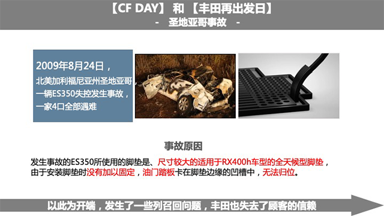
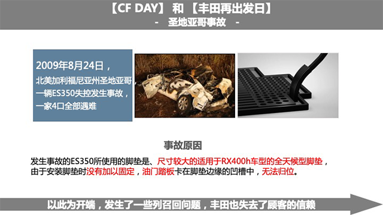
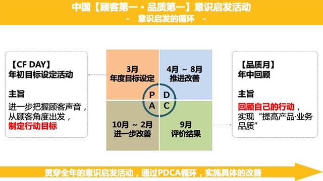
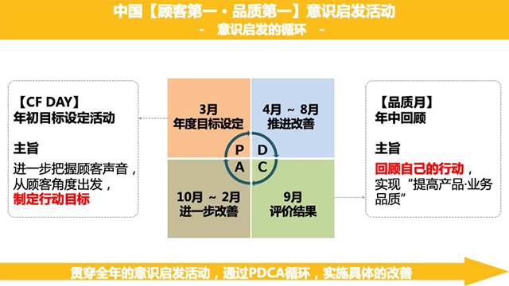

2020年顾客第一挚爱日

一汽丰田汽车销售有限公司
总经理
当前的中国，正处于向新型移动社会转变的关键时期。同时，中国车市也在由增量市场逐步转化为存量市场，“新四化”快速普及，顾客需求快速变化。机遇与挑战并存。
“顾客挚爱日”是一个很好的契机，我们要从顾客的声音中反思工作的现状，从顾客的需求中发现改善的目标，用果断的行动提高工作品质，将“顾客第一”的理念贯彻到底。
请调动起我们的全部热情和积极性，创造超越顾客期待的产品与服务，赢得这个时代的挑战！
2020年顾客第一挚爱日
一汽丰田汽车销售有限公司
常务副总经理在被认为是100年一次转换期的汽车行业中国汽车市场和从前大不相同，已经步入世界的前列。我们面对的变革和挑战在发达国家是没有先例的，中国市场正在转变为发达国家，从而也会创造出很好的示范
一汽丰田在这个形势之下，在平日对于TOYOTA WAY进行了踏实的实践每一位员工都怀有『客户至上』的意识和观点为了让更多的客户.经销店留下记忆，我们共同努力提供能够获得信任和支持的产品以及服务体验吧。
在危急关头抓住机遇，为了客户.经销店的喜悦让我们现在把这当做是重新审视自身的一次契机吧。

 


 



车辆信息：普拉多 关键词：信任危机
24小时救援，说到做不到
顾客的声音
· 晚上途中车辆遭遇故障，需要更换备胎，给经常保养的4S店打电话寻求帮助；
· 后再联系4S店，等了两天无人理，说好的24小时救援却做不到，欺诈客户；
· “已下班来不了”、“北京五环外不能来”，工作人员找各种理由推脱；
· 给平安保险打电话，很快派人过来服务周到，4S店的服务还不如保险公司。
我们的反思
给客户的承诺没有做到，面对再联系一拖再拖，让客户对一汽丰田品牌产生信任危机。如何加强监管，确保4S店严格执行服务承诺，确保每个员工都能把工作做到位，是根本所在
车辆信息：卡罗拉 关键词：推卸责任
保养损坏车辆后，对客户恐吓威胁
顾客的声音
·去4S店做保养，店内工作人员不穿工服，还让我把车开到工位，因为指挥不当，把车的后尾灯和后杠撞坏；
·工作人员说要等领导回来处理，车损坏后的半个月时间，店内的工作人员从来没有主动联系过寻求解决办法；
·去其他地方维修，拿单据找该店赔偿维修费用，4S店不仅不承认，还恐吓威胁说我勒索，要报警处理问题。
我们的反思
员工的工作疏忽，给客户造成了损失，还是因为没有严格按照作业规范流程操作。绝不能推卸责任，应该坚持“客户第一”理念，把客户的事放在首位，本着解决问题的初衷来对待客户。
车辆信息：奕泽 关键词：态度恶劣
新车出故障，技术差／态度差
顾客的声音
·刚买的新车奕泽只开了一次，就出现充电系统故障问题，开车上路就熄火，无法正常使用；
·去4S店检测了两次都没有查出问题的原因，第三次去的时候，店内工作人员服务态度很差，说话很难听；
·与4S店协商，想更换车辆或适当延长质保，4S店说不同意，说自己很忙，你们的服务就是这样的
我们的反思
若4S店遇到技术难题，可以向大区、技术室等相关人员寻求帮助，一定要全力为客户解决问题。对客户的“一次修复”承诺，更不能只放在口头上，而应该落到实处。
车辆信息：普拉多 关键词：漫长等待
进口配件到货周期长，好车变成报废车
顾客的声音
·普拉多维修需要进口配件，被告知要等至少三个月，自己的朋友也遇到过类似的情况；
·据了解，所有进口车配件都要等好几个月，车坏了不能维修，长期停驶好车也要成报废车了；
·现在交通方式很方便，从美国运过来也不要那么长时间，咱们不能总停留在原地踏步的状态。
我们的反思
对于客户的问题反馈，我们要及时加强各部门之间的客户声音信息传递，加速问题的解决。可以制定专门的应对话术，让接线员或4S店服务人员在与客户沟通时，能够更加有的放矢，避免因为沟通不当，给客户留下差印象。
车辆信息：威驰 关键词：召回补偿
不满二次召回处理，拿生命开玩笑
顾客的声音
·收到召回的一封信，曾经因为气囊被召回过，为什么一次不能把问题解决，是不是需要定期召回？
·由于当地没有4S店，需要跑很远才能去4S店进行召回维修，对于这种情况是不是应该有油费补偿？
·曾经遇到过四次碰撞情况，都没有打开气囊，撞车了气囊打不开，这不是拿着人的生命开玩笑！
我们的反思
·曾经遇到过四次碰撞情况，都没有打开气囊，撞车了气囊打不开，这不是拿着人的生命开玩笑！
车辆信息：奕泽 关键词：强制看车
销售说话强势，竟然破口骂人
顾客的声音
·在汽车之家网站上关注奕泽新车，提交了联系电话，准备去4S店里看车，销售人员打电话说让去车展；
·当时正在开车，不想去车展，销售人员却非常强势，说去店里多麻烦，车展优惠力度大，非要让去车展；
·后来说不去看车了，销售人员就开始骂人，咱们的品牌也这么多年了，销售人员都是不经过培训的吗？
我们的反思
在发现客户有不满情绪时，应该用正确的交流方式予以缓解，而不是一味地强势沟通。多站在客户的角度想问题，决不能为了一己私利，强制客户去做不想做的事。
车辆信息：RAV4荣放风尚版 关键词：怠慢拖延
车辆异响，查出原因却没有跟进解决
顾客的声音
·我买车后驾驶3000公里，怠速时就出现了类似敲木鱼的异响；
·经销店反馈给厂家后，找到的原因是国5升级国6排放导致排气管出现的异响；
·查出问题后，却没有人后续来解决，变得无人问津了，别特无助。
我们的反思
行百里者半九十，没有跟踪到底的服务就意味着失败。因此，凡是客户反馈过来的问题，一定要有负责到底的意识，让客户始终感到有人在关注着他的问题，这才是好的服务
车辆信息：卡罗拉 关键词：首检造假
弄虚作假、伪造签字，客户的信任荡然无存
顾客的声音
·买车后保养手册遗落在经销店，经销店说首保时再去店里取回即可；
·7个月后接到经销店电话邀请回店做首保，却发现保养手册上多了首检和首保记录，而且伪造了我的签名；
·还没有到店做首检、首保，就已经写下了记录，这种弄虚作假的做法让人难以信任。
我们的反思
销店的做法显然是为了完成任务而置客户利益于不顾。弄虚作假是摧毁客户信任的最恶劣的做法，任何时候都要引以为戒。
车辆信息：威驰 关键词：冷落客户
互相打闹聊天，对客户爱答不理
顾客的声音
·原本是携家带口，准备了现金到店里直接买威驰车的，可到店后却没有人接待，完全受到了冷落；
·三个工作人员在前台互相打闹聊天，去询问车型的颜色、配置都没有人回应，被当做了空气；
·没想到堂堂一汽丰田经销店，店员服务态度这么差，感觉受到了极大的冒犯。
我们的反思
这是严重的玩忽职守，反映出的是经销店培训、管理、制度全方位的缺失。一汽丰田对一线人员的责任感教育、服务意识培训永远不能懈怠，他们对客户的不敬会严重损害公司的整体形象
车辆信息：卡罗拉 关键词：细节致胜
服务贴心让客户倍感惊喜
顾客的声音
·到4S店保养，在客休区等待的时候，倒茶水的工作人员，在服务时让人感觉一下子回到家里一样；
·当天带了孩子去店里，小朋友觉得不好玩特别吵闹，工作人员看到自己的情绪不太好，专门过来调解；
· “已下班来不了”、“北京五环外不能来”，工作人员找各种理由推脱；
·还给孩子准备了小点心，茶水一喝完就续上，更专门把电视打开，这样的服务充满了惊喜，让人觉得是在为客户着想
我们的反思
把客户的事当成自己的事来解决，在工作岗位上精益求精，用行动建立品牌好感度，将会大幅提升一汽丰田在客户心中的高品质形象，扩大一汽丰田的品牌影响力。
车辆信息：RAV4荣放 关键词：上门服务
把客户的话放在心上就是最大的体贴
顾客的声音
·安徽黄山当地经销店店关闭了，我只能往返200多公里到铜陵的经销店做保养；
·在和店员的闲聊中，我无意间提到过这个问题，没想到经销店却上了心；
·不久，铜陵经销店就开始每月定期到黄山开展上门服务，每次都会提前和我们黄山的车主约好时间、准备好零件。
·我们特别高兴，感觉一汽丰田的服务确实好。
我们的反思
经销店的工作人员能从客户的只言片语中发现需求，真正将客户的话放在心上，并很快做出应对，这是对“致真至极”口号的最佳实践，值得所有一汽丰田人学习。
车辆信息：卡罗拉双擎 关键词：技术过硬
负责任的技师帮客户省了上万元钱
顾客的声音
·我的车刹车有些问题，到第一家店没有明确查出问题，却建议我花费17000元更换刹车总泵，还不确定能否解决问题；
·于是我来到第二家经销店，这里的技术总监和维修技师非常负责任，极为认真的检查了车辆，最终只花了300多元就修好了；
·两位技术好、责任心强的工作人员避免了我的损失，让人非常信任。
我们的反思
专业性是提供优秀服务的基础，每个人都应该努力提升自己的专业水平。对于自己无法判断的情况，随意向客户提供不可靠的解决方案是极端不负责任的，会使经销店和一汽丰田处于不被信任的境地。
车辆信息：RAV4 关键词：回访死板
回访时间太长不顾客户感受
顾客的声音
·一汽丰田4S店的工作人员在回访时，我都已经反馈服务挺好、很满意了，还是一项一项地问个没完；
·说了好几次有事情要去忙，回访客服仍然继续一直问，丝毫不顾及客户的感受，让人觉得很不愉快、很反感；
·回访的时间太长，耽误了自己很多的时间，建议以客户的回答为准，适当缩短时间。
我们的反思
在日常工作中，我们要不断倾听客户的声音，而不能为了完成回访任务，不考虑客户的感受。要多从客户的角度出发，多为客户考虑，才能更好地走近客户。
车辆信息：奥迪 关键词：勇于担当
来自奥迪车主的一份感谢
顾客的声音
·国庆节从北京回安徽安庆老家的路上，车胎被扎，正好路过铜陵服务区，看到一汽丰田4S店做高速关爱活动；
·工作人员帮忙免费检查，由于车胎侧面被扎无法补胎，车上也没有备胎，又帮忙联系当地奥迪4S店，联系拖车；
·他们都非常热情，还帮忙把我们一车人送到4S店内，最后想付一些费用，他们都没有收，非常感谢。
我们的反思
无论在4S店内还是店外，都要保持高度的责任感，因为代表的是一汽丰田。超越客户期待的服务，不仅能赢得自身品牌客户的喜爱，也能赢得他品牌客户的认可，从而铸就品牌的美誉。
车辆信息：全新RAV4荣放 关键词：配置落后
显示屏清晰度太差，建议升级
顾客的声音
·准备购买全新RAV4荣放，各方面都很满意，唯独中控屏幕的品质和车辆极不匹配；
·中控屏幕的清晰度很差，像素模糊，甚至比不上路边店几百元的杂牌产品；严重影响了购买的意愿；
·希望厂家能够重视第三方采购零部件的品质，尽快升级全新RAV4的中控屏幕，不要落后于时代。
我们的反思
不论是产品还是服务，“短板”都是最容易被客户注意并记住的地方。倾听顾客声音，尽快改善“短板”，就能让客户感受到诚意，进而产生信任；若对客户的声音不闻不问，势必会被客户抛弃。


Q1：2020顾客挚爱日从线下转到线上，你怎么看？
Q2：参与挚爱日线上活动所需时间，你觉得如何？
Q3：相比往年，增加的各科室排名，你是否接受？
Q4：相比以往，增加的宣言分享朋友圈，你是否接受？
Q5：视频展示，从往年的不足转为优秀成绩展示，你怎么看？
Q6：你觉得科室小组讨论学习的形式怎么样？
Q7：本次活动中，对你触动最大的展示版块是？
Q8：你觉得挚爱日活动，还可以拓展哪些互动？
Q9：每年一次的挚爱日，你的收获是？
Q10：接下来，在工作上你有什么打算？